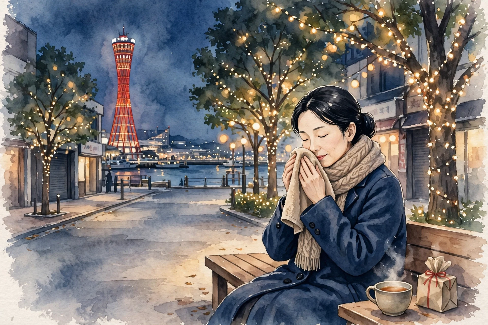

三ノ宮でクリスマスイルミネーションを見に行った日に気になる目の疲れ感｜冬の夜の過ごし方とセルフケア、受診の目安セルフケア

クリスマスの時期、三ノ宮や元町・ハーバーランド方面へイルミネーションを見に行った夜、帰り道や帰宅後に目の疲れ感が気になる方へ。きらめく光を眺めたあとに目が重く感じたり、しょぼしょぼしたりする感覚について、一般的な解説と考えられる要因、冬の夜に取り入れられるセルフケア、受診の目安を整理しました。
目の疲れ感とは — イルミネーションの夜に気になりやすい目の重さ
目の疲れ感は、目や目元まわりに重さやだるさを感じる状態を指す、日常的によく使われる言葉です。感じ方には、まぶたが重く感じる、目の奥が重だるく感じる、目が乾いた感じがする、しょぼしょぼする、かすんで見える、近くも遠くもピントが合いにくく感じる、といった表れ方があり、程度には個人差があります。イルミネーションを見に行った夜は、「光を眺めているうちに目がちかちかするように感じる」「暗い場所と明るい光を行き来して、目が追いつかないように感じる」「写真を撮ろうとスマートフォンの画面を見続けていたら、目の奥が重く感じる」「帰りの電車やバスで目を閉じたら、まぶたの重さを強く感じる」「寒い屋外に長くいたあと、目元が乾いたように感じる」といった声を聞くことがあります。昼間の目の疲れ感が画面仕事の積み重ねと重なって感じられることが多いとされるのに対し、イルミネーションの夜の目の疲れ感は、暗さと光のコントラスト、屋外の寒さや乾燥、歩き回る時間の長さと重なって感じられやすい点が特徴とされます。ここでは原因を一つに決めつけず、考えられる要因と冬の夜の付き合い方を整理します。クリスマス・年末の準備で気になる肩こりについては、ブログ記事三ノ宮でクリスマス・年末の準備に気になる肩こり｜買い物や大掃除の合間の過ごし方とセルフケア、受診の目安で別に取り上げています。
目元の重さと関わる部位の目安は、図1のとおりです。
図1｜冬の夜に重く感じやすい目元・こめかみ・首（正面）

考えられる要因
要因は一つとは限らず、いくつかのことが重なって感じられる場合があるとされます。たとえば、暗い夜道で明るいイルミネーションを眺め続けたこと、光の強い場所と暗い場所を行き来したこと、スマートフォンで写真や動画を撮るために画面を見続けたこと、寒い屋外で目元が冷えたこと、歩き回る時間が長くなったことなどが関わる場合があるようです。そのほか、イルミネーションを見に行く前に日中の画面仕事が続いていたこと、眠りが浅い日が続いていること、屋外と暖かい室内の行き来で目元が乾いたように感じること、首や肩まわりの張りが強いこと、コンタクトレンズを長時間つけていたことなどが重なる場合もあるようです。東洋医学では、目のまわりの重さは気・血の巡りのバランスの変化として捉えられてきました。目の疲れ感そのものの考え方は、ブログ記事三ノ宮で季節の変わり目に気になる目の疲れ感｜要因の整理とセルフケア、受診の目安にもまとめています。見に行った日の過ごし方や帰宅後の目の感じ方を簡単にメモしておくと、ご自身で気になりやすい条件を眺める参考になります。
イルミネーションの夜と帰宅後に取り入れられるセルフケア
まずは日常の過ごし方の工夫から始めてみてください。イルミネーションを眺めるときは、明るい光をじっと見つめ続けず、ときどき視線を外して遠くの暗い景色や足元へ目を向けることが、取り入れやすい工夫とされます。写真を撮るときも、画面を見続ける時間を区切り、撮り終えたらスマートフォンをポケットにしまうひと手間が、目を休ませるきっかけになります。屋外では、目元を冷やしすぎないよう、マフラーや帽子で顔まわりを覆う、風の強い場所では目を細めて歩くといった工夫も参考になります。帰宅後や滞在先では、温めたタオルを閉じた目元に当てる、湯船につかって首元まで温める、といった過ごし方が、冬の夜に取り入れやすいケアです。目が乾いた感じがするときは、まばたきを意識してゆっくり繰り返すこと、部屋の照明を少し落として過ごすことも、意識しやすい方法です。温かい飲み物をゆっくりとる、帰宅後は早めに休む準備をすることも、夜の過ごし方として挙げられます。目元は強く押したりこすったりせず、気持ちよい範囲にとどめることが続けるうえでの目安になります。無理のない範囲で、一つか二つ選ぶところから始めてみてください。
受診の目安
目の痛みが強い、片方の目だけ見え方がおかしい、ものが二重に見える、視野の一部が欠けて見える、急に見え方が変わった感じがする、強い充血や目やにが数日続く、光が異常にまぶしく感じる、頭痛や吐き気を伴う、目の重さや疲れ感が数週間以上続く、日常生活や仕事に支障が出ている——こうした場合は、自己判断で様子を見続けず、眼科などの医療機関への相談をご検討ください。目の症状は、目以外の体の変化で表れる場合もあるとされるため、原因を一つに決めつけずに相談することが目安になります。当店の施術はリラクゼーションを目的としたもので、症状の診断・治療を行うものではありません。気になる症状があるときは、まず医療機関で相談したうえで、日常のケアの一つとしてサロンのご利用をお考えください。
三ノ宮で、イルミネーションの夜に目を休める時間を
ステラスピカは神戸・三ノ宮エリアの女性専用サロンです。営業時間は月〜土17:00〜22:00（日曜休み・完全予約制）で、夕方から夜の時間帯にご利用いただけます。イルミネーションを見に行った夜も、その日の疲れをため込みすぎない過ごし方の一つとして、夕方の時間を体を休める時間にあてる方がいらっしゃいます。完全個室でご案内します。オイルマッサージ／美容整体は90分10,000円（税込）で、施術歴30年のセラピストが、その日の体調や気になるお悩みをうかがいながら、その日の状態に合わせて無理のない圧と内容で全身をケアする施術を組み立てます。施術では、目元・頭部まわりから首・肩・背中へ、つながりを意識しながら丁寧にほぐしていきます。なお、ステラスピカは開院しました。ご予約はLINE公式アカウントで受け付けています。住所は神戸市中央区琴ノ緒町2-3-5 ネオダイキョー三宮606号室（JR三ノ宮駅東口徒歩5分）です。料金やメニューの詳細はメニュー・料金、ご予約の流れはご予約・お問い合わせをご覧ください。
ステラスピカ（三ノ宮） — 女性専用、90分 10,000円、月〜土17:00〜22:00、完全予約制です。